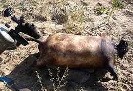

Marmots are large Ground Squirrels that can be found in North America, the Alpine region of Europe, the Himalayas, Central Asia, Siberia, Mongolia, and northern China. The North America Woodchuck is also a Marmot, but it already has its own WoodChuck / Groundhog page. Here we consider just the ones hunted and eaten in Mongolia, the only other region where Marmot is much on the menu.
The two Marmots listed above have an overlapping range from Kazakhstan through southwest Siberia, Mongolia and northwestern China. They usually weigh between 9 and 14 pounds, but can weigh up to 18 pounds. when nearing hibernation.
The Tarbagan Marmot is ICUN Red Listed as Endangered (it's the one most hunted in Mongolia). The Gray Marmot, and nearly all other Marmots, including the Woodchuck, are ICUN Red Listed as Least Concern. Photo by Alastair Rae distributed under license Creative Commons Attribution-ShareAlike v3.0 Unported.
More on Rodents & Rabbits.

The photo shows a kerosene blow torch being used by a Mongolian to burn the fur off a Marmot. The beast is then disemboweled and boned. It is cooked by pouring hot rocks into its body cavity. Talk about Paleo, this is really Paleo - except the kerosene torch is just pre-Victorian.
Warning: Marmots can carry Plague, so they must be handled with care to avoid direct exposure, breathing body fluids, or being bitten by their fleas. They should be cooked "well done" - In 2019 a Mongolian couple died of Plague after eating raw Marmot meat. Photo by Bogomolov.PL, contributed to the Public Domain .
ar_marmz 201025 - www.clovegarden.com